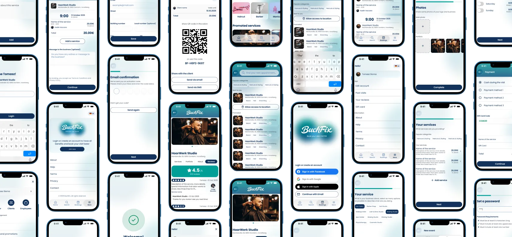
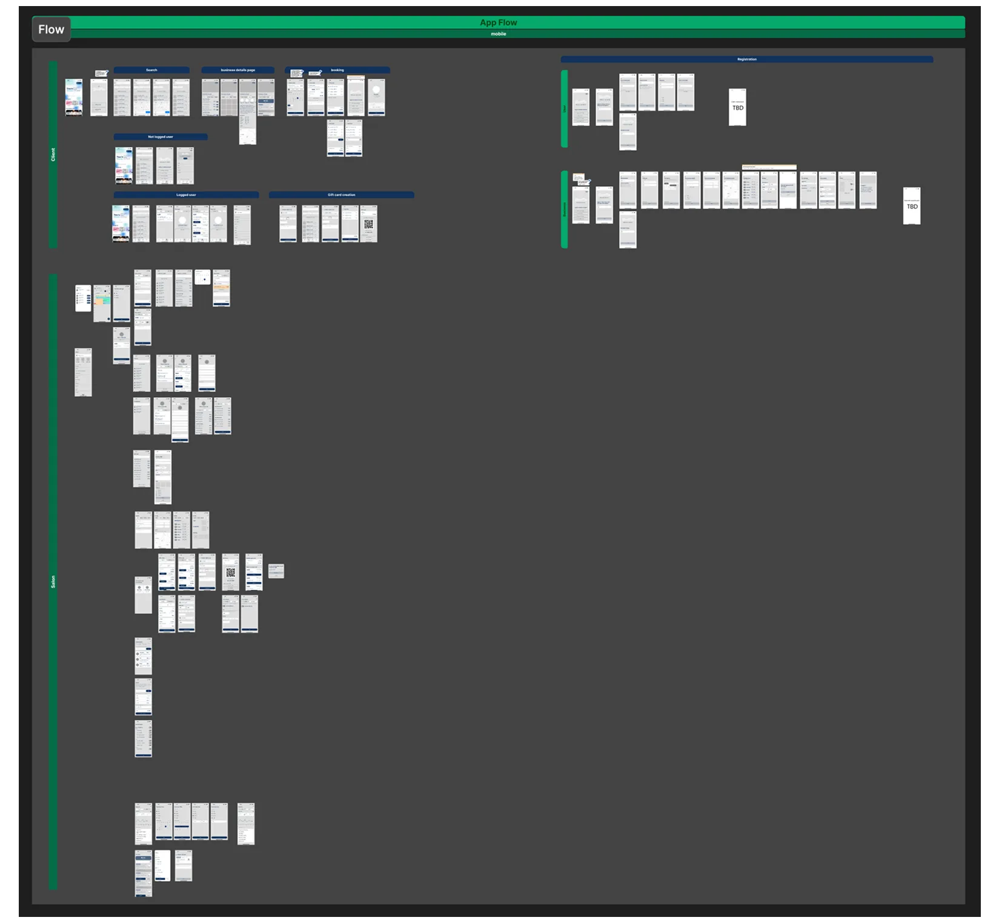
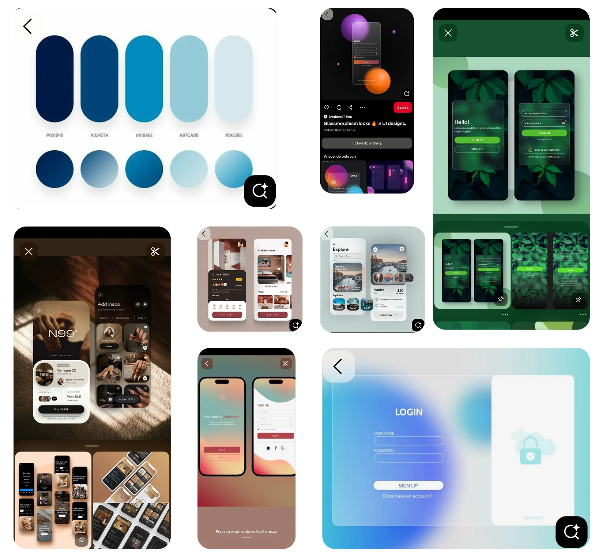
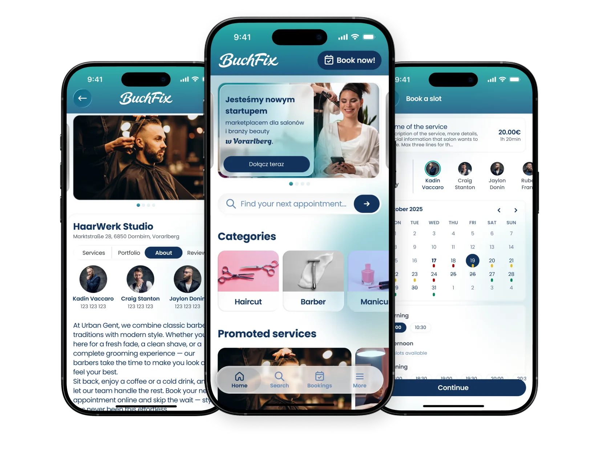
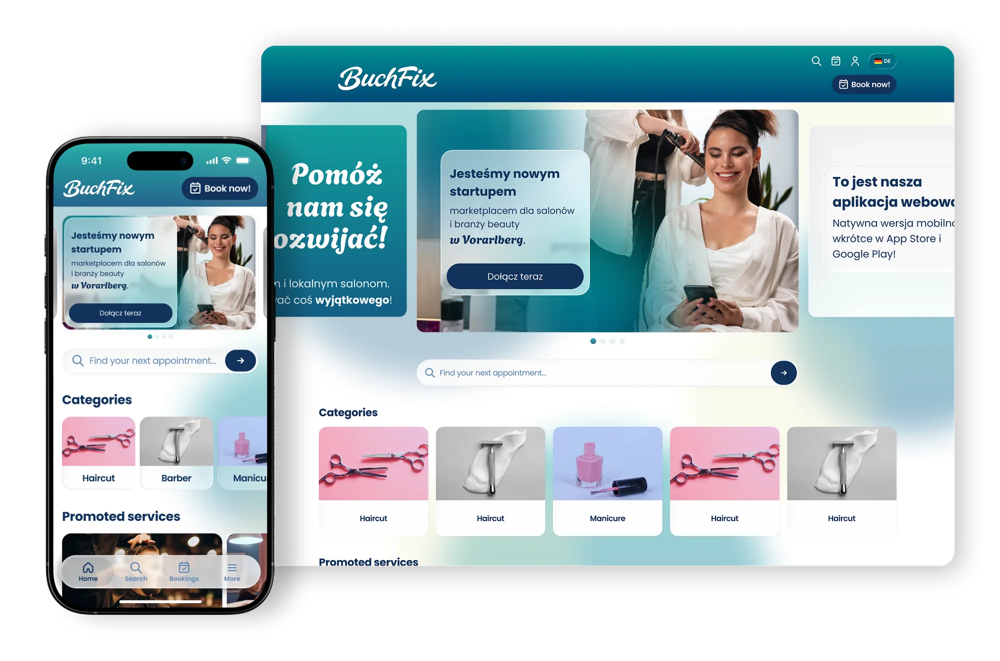
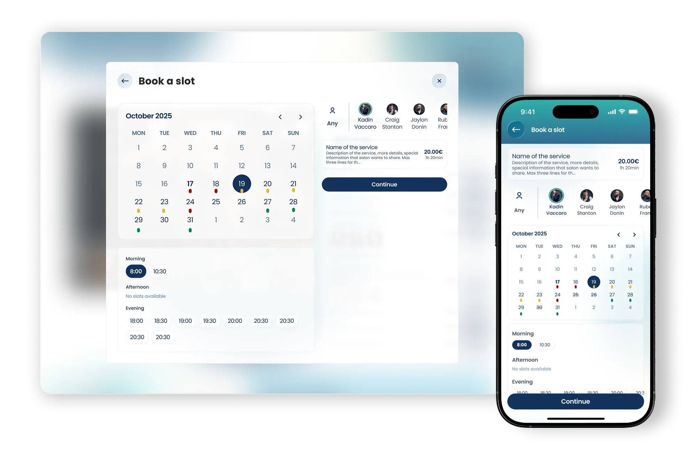
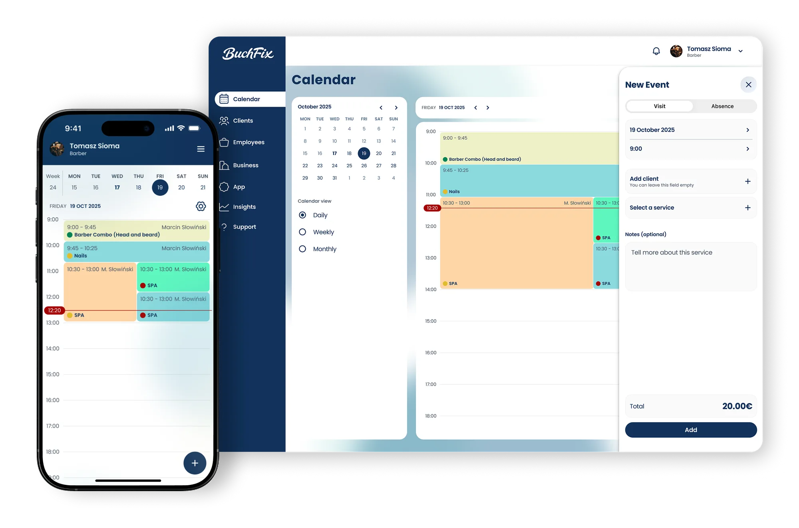

Project Description
MVP designed for the Austrian market with a focus on improving salon visibility and delivering a seamless booking experience for clients and salon owners.
Problem & Context
Beauty salons in the Vorarlberg region lack a unified, tailored booking platform that combines online discovery, appointment management, and salon-centric operational tools.
Many businesses currently rely on a mix of fragmented booking systems, manual processes, or generic solutions that don’t fully meet local needs.
BuchFix aims to fill this gap with a local MVP that validates product-market fit before scaling nationwide.
The long-term vision is to evolve into a comprehensive solution similar to Booksy but adapted to Austrian market nuances and user expectations.

Market & Competitive Landscape
On the market today, several established platforms serve salons and service businesses globally or regionally:
- Fresha is a robust booking and salon management platform used worldwide. It combines a client-facing marketplace with business tools like scheduling, inventory, and client engagement. Its biggest strength is connecting salons to a broad audience and helping with client acquisition, sometimes leading to measurable growth in bookings and retention.
- Booksy is one of the most widely known platforms in beauty and grooming. It offers appointment scheduling, marketing automation, client management, and in-app payments. The product focuses on growth via a marketplace and built-in promotional tools.
- SimplyBook.me provides a highly customizable booking system with integrations, branding options, automated notifications, and flexible pricing. It’s particularly suitable for businesses that want control over branding and booking flows without heavy marketplace dependency.
These tools show that clients expect seamless online discovery and scheduling, and salons expect control over operations, promotions, and customer relationships. BuchFix’s strategy focuses on these dual needs with a localized approach.
My Role
I worked as the UX/UI Designer on BuchFix with responsibility for:
- requirement gathering from the stakeholders
- user flows and task mapping
- lo-fi wireframes for early validation
- visual identity including color palette (green, turquoise, blue) and liquid glass style
- hi-fi UI design ready for development
- component library with constraints and autolayouts
- mobile and desktop responsive design (mobile first)
- delivery of 200+ hi-fi screens
- close collaboration with devs

Research & Insights
Market research highlighted key insights that shaped the MVP:
- Salons want to maintain customer ownership and data, not lose it to big marketplaces. This insight pushed us to design features around CRM, customer lists, and analytics that belong to the salon, not just the platform.
- Clients increasingly expect 24/7 booking availability, reminders, and the ability to browse and compare salons before booking. A smooth discovery experience is crucial, especially when salons are competing for attention online.
MVP Scope
Challenges
- salon discovery by location, promotion and services
- salon profiles with pricing, photos, staff info
- user sign-up, login, and account management
- appointment selection and booking workflow
- booking history and automated notifications
Salon Dashboard
- calendar and scheduling management
- client database and CRM tools
- staff scheduling and capacity planning
- promotions, gift cards, and subscription options
- basic business analytics and review moderation
These functions reflect user needs while keeping the MVP focused and feasible within pilot constraints.
Visual Design & UI
The visual direction was informed by the client's preferences for a palette based on green, turquoise and blue, with a liquid glass aesthetic inspired by modern UI trends like those seen in iOS 26.
Differences in color accents were applied between the client interface and the salon dashboard to provide visual distinction and improve orientation.

Design Process
The UX/UI process involved iterative stages:
- Stakeholder workshops to define business goals, color palette, and UX priorities.
- Lo-fi wireframes to validate user flows and task logic.
- Hi-fi UI design with autolayouts for development readiness.
- Component system and style guide to ensure consistency.
- Internal usability reviews and refinements.

Next Steps
- Pilot: Conduct a pilot phase in Vorarlberg and collect qualitative and quantitative feedback.
- Iteration: Iterate on UX based on user behavior and feedback.
- Validation: Validate monetization models and refine the pricing strategy.
- Scale: Begin native mobile app development if KPI targets are met.


